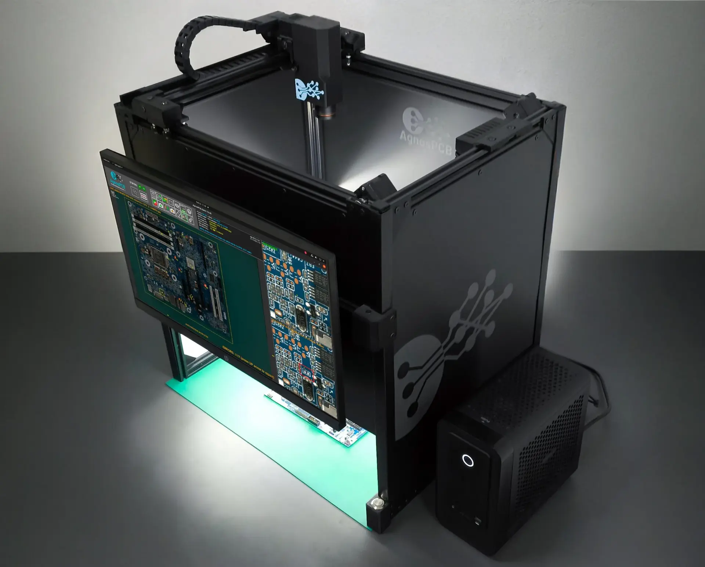
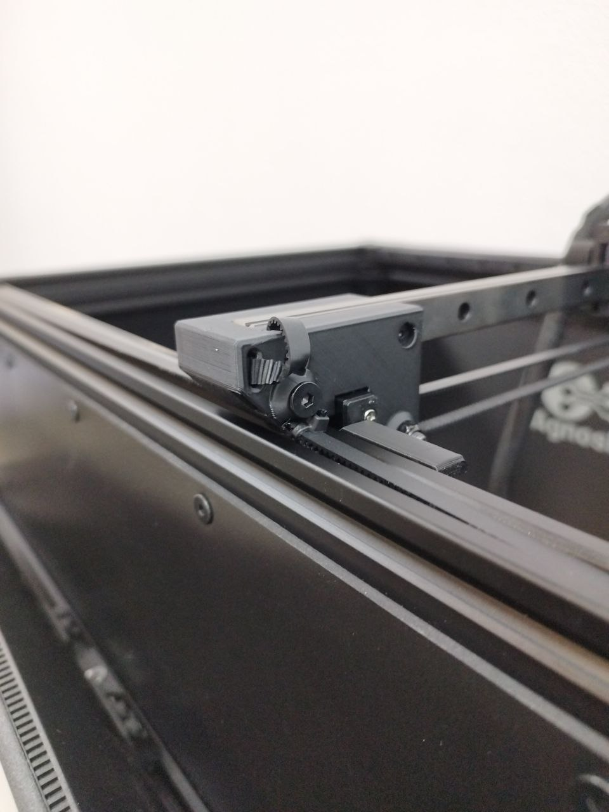
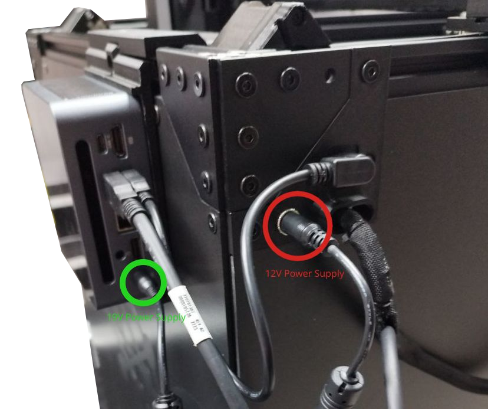
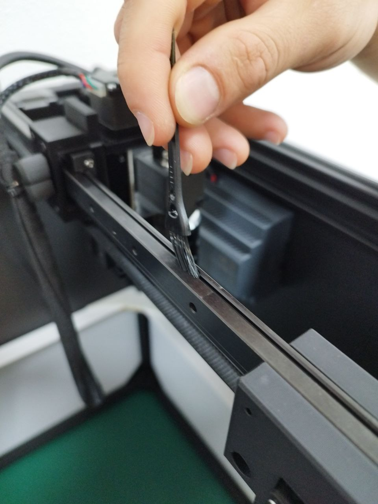

Manutenzione
La AOI AgnosPCB AI-4050 richiede una manutenzione minima, ma è anche importante per il corretto funzionamento del sistema.

| Manutenzione | Periodicità |
|---|---|
| Regolazione della tensione delle cinghie | Mensile |
| Pulizia | Mensile |
| Lubrificazione delle guide lineari | 6 mesi |
Regolazione della tensione delle cinghie
Se noti una vibrazione eccessiva della cinghia quando la telecamera si muove o se il carrello dell'asse Y non è perpendicolare all'asse X, segui la procedura sottostante per tensionare le cinghie:
Passaggio 1
Estrai l'estremità della cinghia dal foro.

Passaggio 2
Allenta la vite esagonale quanto basta per poter tirare la cinghia.

Passaggio 3
Tira la cinghia finché non è dritta e tesa lungo l'intera lunghezza delle guide.

Passaggio 4
Stringi la vite per fissare la cinghia in posizione.
Passaggio 5
Inserisci l'estremità della cinghia nel foro.

Passaggio 6
Ripeti i passaggi da 1 a 5 per l'altra guida, se necessario.
Pulizia
Attenzione
Non utilizzare detergenti liquidi, alcol o sgrassatori su parti in movimento (guide, carrelli, mandrino, ecc.) o componenti elettrici.
Passaggio 1
Scollega l'alimentatore o il cavo CA dal pannello posteriore della macchina.
Vedi rosso:

Passaggio 2
Usa un tovagliolo o un bastoncino di cotone per rimuovere il vecchio grasso dalle guide lineari.

Passaggio 3
Usa la spazzola fornita nel kit di manutenzione per rimuovere qualsiasi contaminazione all'interno delle guide.


Passaggio 4
Usa il soffiatore ad aria incluso nel kit di manutenzione per soffiare sull'obiettivo della telecamera e rimuovere eventuali detriti.

Nota
Opzionalmente, puoi pulire l'obiettivo con un panno in microfibra dopo aver usato il soffiatore, poiché potrebbero esserci particelle in grado di graffiare l'obiettivo.
Lubrificazione delle guide lineari
Attenzione
Prima di lubrificare i carrelli, assicurati di pulire le guide.
Passaggio 1
Scollega l'alimentatore o il cavo CA dal pannello posteriore della macchina.
Vedi rosso:
Passaggio 2
Inserisci l'estremità del dosatore di grasso fornito nel kit di manutenzione nel foro sul lato del carrello della guida.


Passaggio 3
Applica un po' di grasso al carrello.

Passaggio 4
Sposta manualmente i carrelli per distribuire il grasso lungo le guide.

Passaggio 5
Collega l'alimentatore o il cavo CA alla piattaforma.